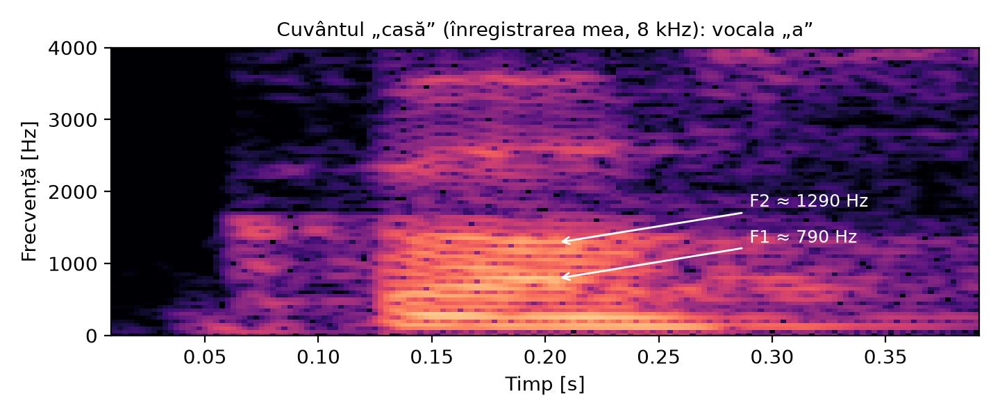

FILE-MITIȚĂ Traian, grupa 441A – Temă de curs, Interfețe om–mașină
Vorbirea este cel mai natural mod prin care oamenii comunică, așa că o interfață om–mașină care înțelege vocea elimină o mare parte din efortul de a învăța să folosești un sistem. La curs am văzut că interfețele în limbaj natural pot primi informația ca text, ca vorbire sau prin gesturi, iar în cazul vorbirii semnalul vocal trebuie mai întâi transformat într-o formă pe care calculatorul o poate prelucra. Astăzi folosim zilnic astfel de interfețe: asistenții vocali de pe telefon (Siri, Google Assistant), dictarea textului, comenzile vocale din mașină, subtitrările automate de pe YouTube sau transcrierea ședințelor din Teams. Pentru persoanele cu deficiențe de vedere sau de mobilitate, interfața vocală nu este doar comodă, ci uneori singura variantă practică.
Componenta care face posibile toate aceste aplicații este recunoașterea automată a vorbirii (ASR, Automatic Speech Recognition), adică transformarea semnalului vocal în textul rostit. Am ales această temă pentru că pornește exact de la ce am lucrat la laborator (parametrii de timp scurt, spectrul, spectrograma și formanții) și arată cum s-a ajuns de la acești parametri la sistemele actuale bazate pe rețele neuronale.
Semnalul vocal nu este staționar: caracteristicile lui se schimbă de la un fonem la altul. De aceea, orice sistem de recunoaștere începe prin a împărți semnalul în cadre scurte, de 20–30 ms, pe care semnalul poate fi considerat aproximativ staționar. Cadrele se iau de obicei cu un pas de 10 ms, deci se suprapun, și fiecare cadru este înmulțit cu o fereastră (de exemplu Hamming), ca să se reducă efectul tăierii bruște a semnalului la capete.
Pe fiecare cadru se calculează parametri care descriu sunetul. Cei mai simpli sunt cei de timp scurt studiați la curs și la laboratorul 2: energia (mare pentru vocale, mică pentru pauze și consoane surde), rata de treceri prin zero (mare pentru sunete fricative precum „s”, „ș”) și frecvența fundamentală F0, care dă înălțimea vocii. Acești parametri sunt utili pentru a separa vorbirea de liniște sau sunetele sonore de cele surde, dar nu sunt suficienți pentru a deosebi între ele cuvintele.
Mult mai multă informație se află în domeniul frecvență. Cu transformata Fourier rapidă se obține spectrul de amplitudine al cadrului, iar prin alăturarea spectrelor cadrelor succesive se obține spectrograma. Pe spectrogramă apar formanții, adică benzile de frecvență în care energia este mare, determinate de forma tractului vocal. Primii doi formanți, F1 și F2, sunt suficienți pentru a deosebi vocalele între ele. Figura 1 arată spectrograma cuvântului „casă”, din înregistrarea făcută de mine pentru bonusul de la laboratorul 3: pentru vocala „a” am obținut F1 ≈ 790 Hz și F2 ≈ 1290 Hz, apropiate de valorile din tabelul de la laborator.

Formanții singuri nu ajung pentru consoane și pentru vorbirea continuă, așa că sistemele de recunoaștere folosesc o descriere mai compactă a întregului spectru. Cei mai folosiți parametri, timp de câteva decenii, au fost coeficienții cepstrali în scara Mel (MFCC), propuși de Davis și Mermelstein în 1980. Ei se bazează pe analiza cepstrală amintită la cursul 3 și se calculează în câțiva pași: spectrul de putere al cadrului trece printr-un set de filtre triunghiulare așezate pe scara Mel (care imită urechea umană, mai sensibilă la diferențele de frecvență joasă: m = 2595·log10(1 + f/700)), se ia logaritmul energiilor din fiecare filtru și apoi se aplică transformata cosinus discretă. Din fiecare cadru rezultă astfel 12–13 coeficienți, la care se adaugă de obicei variațiile lor în timp. O alternativă este analiza prin predicție liniară (LPC), tot de la curs, care modelează tractul vocal ca un filtru și din care se pot obține direct formanții.
Primele sisteme comparau secvența de parametri a cuvântului rostit cu șabloane înregistrate dinainte pentru fiecare cuvânt din vocabular. Pentru că același cuvânt nu este rostit niciodată exact la fel de repede, se folosea alinierea dinamică în timp (DTW, Dynamic Time Warping), care „întinde” sau „comprimă” una dintre secvențe până se potrivește cu cealaltă. Metoda funcționa bine pentru câteva zeci de comenzi și un singur vorbitor, dar nu se putea extinde la vorbire continuă cu vocabular mare.
Din anii '80 până după 2010, aproape toate sistemele au folosit modele Markov ascunse (HMM). Fiecare fonem este modelat de un HMM cu câteva stări (de obicei trei, pentru începutul, mijlocul și sfârșitul fonemului), iar fiecare stare are o distribuție de probabilitate a vectorilor MFCC, modelată cu un amestec de gaussiene (GMM). Un recunoscător complet are trei componente:
Decodorul caută, cu algoritmul Viterbi, succesiunea de cuvinte care explică cel mai bine semnalul. Aceste sisteme au dus la primele aplicații comerciale de dictare, dar aveau nevoie de mult efort de proiectare și erau sensibile la zgomot și la vorbitori diferiți de cei din datele de antrenare.
Primul pas a fost înlocuirea amestecurilor de gaussiene cu o rețea neuronală profundă care estimează probabilitatea fiecărei stări (sistemele hibride DNN-HMM, în jurul anului 2012), ceea ce a redus erorile cu aproximativ o treime. După aceea au apărut sistemele „end-to-end”, în care o singură rețea învață direct legătura dintre semnal și text, fără dicționar de pronunție construit manual. Două idei au contat cel mai mult: funcția de cost CTC (Graves și alții, 2006), care permite antrenarea fără a ști exact ce cadru corespunde fiecărei litere, și modelele codor–decodor cu mecanism de atenție, care „citesc” tot semnalul și apoi generează textul literă cu literă sau cuvânt cu cuvânt.
Un exemplu actual este Whisper, publicat de OpenAI în 2022. Este un model de tip Transformer care primește spectrograma Mel a unor bucăți de 30 de secunde și generează direct textul. A fost antrenat pe aproximativ 680.000 de ore de audio cu transcriere, în aproape 100 de limbi, inclusiv româna, și poate și traduce în engleză. Interesant este că la intrarea modelului se află tot o spectrogramă, deci parametrii studiați la curs nu au dispărut, doar că acum rețeaua învață singură ce să extragă din ei, în loc ca aceste trăsături să fie proiectate manual.
Performanța unui sistem se măsoară de obicei prin rata de eroare la nivel de cuvânt (WER), calculată ca (S + D + I) / N, unde S, D și I sunt numărul de cuvinte înlocuite, șterse și inserate, iar N este numărul de cuvinte din textul corect. Pe înregistrări curate în engleză, sistemele actuale ajung la câteva procente, aproape de nivelul unui transcriptor uman.
Într-o interfață om–mașină reală, recunoașterea vorbirii este doar o verigă dintr-un lanț mai lung. Un asistent vocal ascultă permanent, cu un model foarte mic care rulează local, doar un cuvânt de activare („Hey Siri”, „Ok Google”). Abia după ce îl detectează pornește recunoașterea propriu-zisă, iar textul obținut trece la un modul de înțelegere a limbajului (NLU), care identifică intenția utilizatorului (de exemplu „setează alarmă”) și parametrii ei („ora 7”). Sistemul execută acțiunea și răspunde prin sinteză vocală (TTS), care face drumul invers: din text produce semnal vocal. Și detecția activității vocale, adică separarea vorbirii de liniște, se bazează în forma cea mai simplă pe energia și rata de treceri prin zero ale cadrelor, exact parametrii de timp scurt de la laboratorul 2.
Din punctul de vedere al proiectării interfeței contează și ce se întâmplă când recunoașterea greșește. Principiile generale de la cursul 1 (feedback, prevenirea și corectarea erorilor) se aplică și aici: un asistent bun afișează sau repetă ce a înțeles, cere confirmare înainte de acțiuni importante (de exemplu trimiterea unui mesaj) și permite corectarea rapidă, fără ca utilizatorul să o ia de la capăt.
Chiar dacă recunoașterea a devenit foarte bună, folosirea ei într-o interfață om–mașină ridică încă probleme:
Recunoașterea automată a vorbirii a evoluat de la compararea unor șabloane pentru câteva cuvinte, la modele statistice HMM și apoi la rețele neuronale antrenate pe sute de mii de ore de vorbire. Cu toate acestea, la baza tuturor sistemelor rămân aceleași noțiuni studiate la curs și la laborator: împărțirea în cadre și ferestruirea, spectrul, spectrograma și formanții. Pentru interfețele om–mașină, rezultatul este că vocea a devenit un mod de interacțiune folosit zilnic, iar provocările care au rămas (zgomotul, limbile cu puține date, confidențialitatea) sunt direcțiile în care se lucrează acum.
[1] A. Griparis, Interfețe om–mașină, note de curs (cursurile 1–3), UNSTPB, ETTI, 2026.
[2] L. Rabiner, B.-H. Juang, Fundamentals of Speech Recognition, Prentice Hall, 1993.
[3] S. Davis, P. Mermelstein, „Comparison of parametric representations for monosyllabic word recognition in continuously spoken sentences”, IEEE Trans. Acoustics, Speech, and Signal Processing, 28(4), 1980.
[4] A. Graves et al., „Connectionist Temporal Classification”, ICML, 2006.
[5] A. Radford et al., „Robust Speech Recognition via Large-Scale Weak Supervision” (Whisper), OpenAI, 2022.
[6] D. Jurafsky, J. H. Martin, Speech and Language Processing, ediția a 3-a (draft), cap. 16.